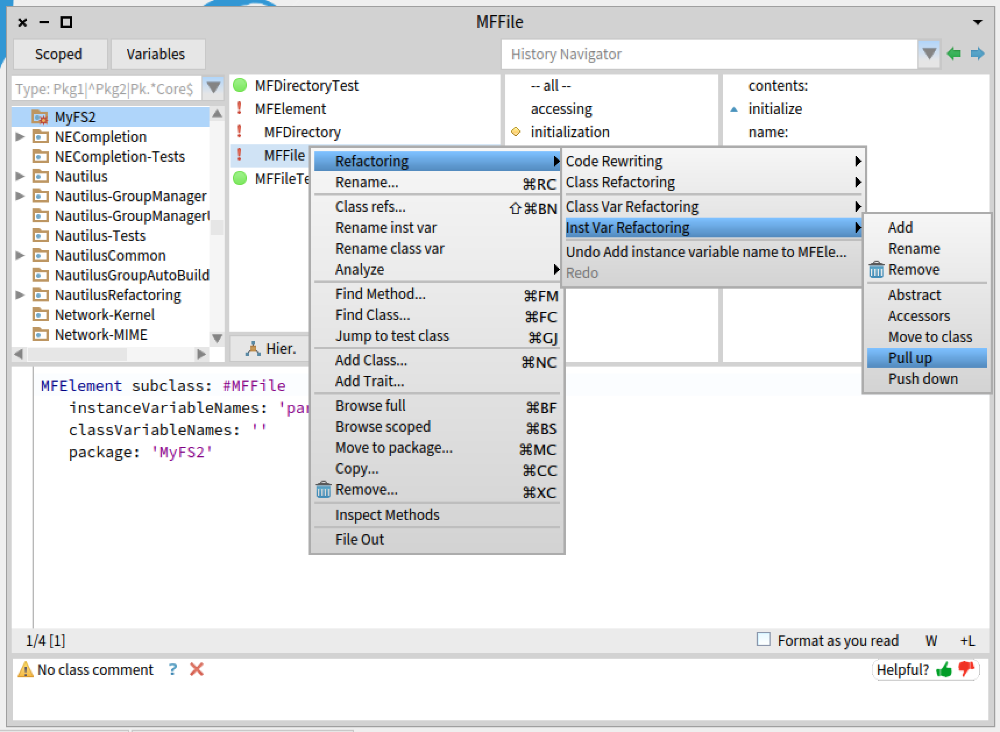
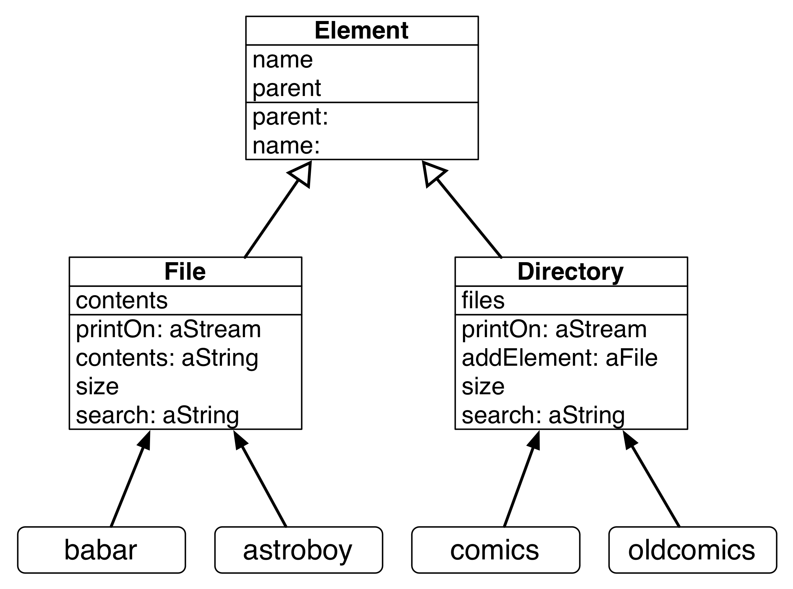
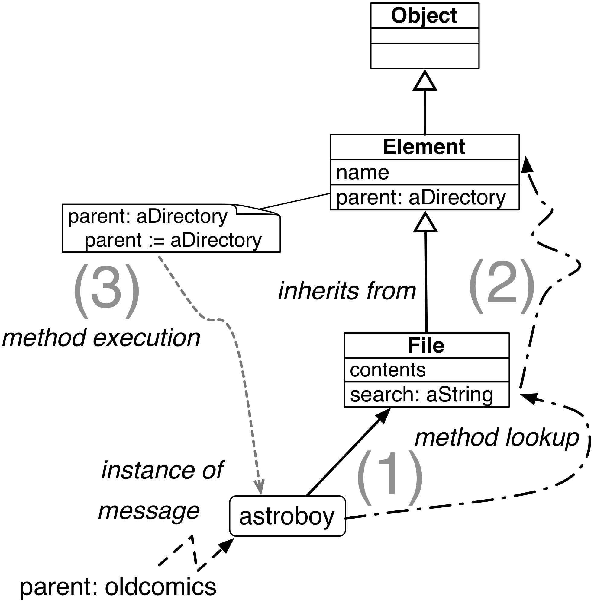
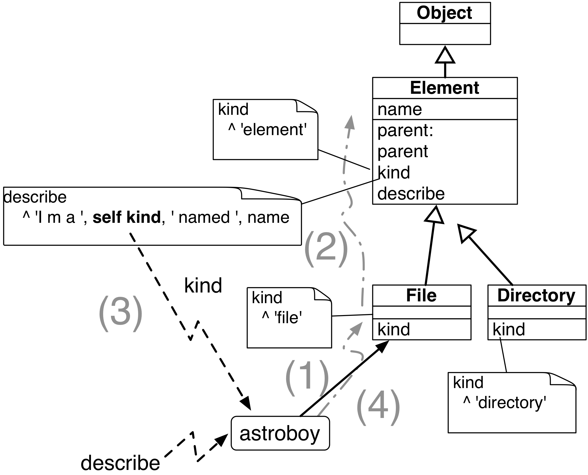

13 Inheritance: Incremental definition and behavior reuse
In Chapter 7, we presented objects and classes. Objects are entities that communicate exclusively by sending and receiving messages. Objects are described by classes that are factories of objects. Classes define behavior and structure of all their instances: All the instances of a class share the same behavior but have their own private state.
In this chapter, we present the fundamental concept of inheritance that allows a class to reuse and extend the behavior of another class. The idea is that as a programmer we do not want to rewrite from scratch a functionality if another class already offers it. A program specializes the implemented behavior into the new behavior he wants. Inheritance lets us express this concept specialization. Using inheritance we create trees of concepts where more precise ones refine more abstract and generic ones.
Inheritance is based on dynamic method lookup: a method is looked up dynamically within the inheritance tree starting from the class of the receiver. Once this explained we will show that it is possible to get code of a subclass invoked in place of the one of a superclass.
To illustrate the important points of inheritance, we revisit the example of Chapter 7.
13.1 Inheritance
Object-oriented programming is also based on the incremental definition of abstractions. This incremental definition mechanism is central to support reuse and extension of abstraction. It is called inheritance. The idea is that you can define a new abstraction (a class) by refining an existing one (its superclass). We said that a subclass inherits from a superclass. This way we reuse the code of the superclass instead of rewriting everything from scratch.
Class inheritance creates trees of classes. Such trees are based on generalization: a superclass is more generic than its subclasses. A class in such trees can have instances. All the instances share the behavior defined in their class and superclasses. This is within such trees that the system looks up the method corresponding to a message sent to an instance of a class.
Inheritance supports code reuse because instance variable and methods defined in a root concept (class) are applicable to its refinements (subclasses).
We will use and extend the simple and naive example of files and directories (seen in Chapter 7) to illustrate the key aspects of inheritance. While simple, it is enough to show the key properties of inheritance that we want to illustrate:
- incremental definition: a subclass is defined by expressing the difference to its superclass. A subclass specializes its superclass behavior.
- state reuse: instances of a subclass have at least the state structure of the superclass.
- behavior reuse: upon message reception instances, when the class of the receiver does not define a method, methods of the superclasses are executed instead.
- behavior redefinition (overriding): a subclass may change locally a method definition inherited from its superclass.
- behavior extension: a subclass often extends the behavior of one of its superclasses by defining new methods and state.
- subclass behavior can be invoked instead of superclass behavior: behavior defined in a subclass may be executed in place of the one of a superclass. It means that with behavior overriding subclass behavior can be invoked in place of superclass behavior. This is a really important feature of inheritance.
13.2 Improving files/directories example design
Let us go back to the example of files and directories introduced in previous chapter.
When we look at the situation depicted by Figure 13.1 we see that a file is not the same as a directory, even though they share some common state: both have a name and a parent. In addition, they understand some common messages such as size, search:, parent: and name:. Remember that size and search: were not implemented the same way but the messages have indeed the same name.
Load the code so that you can get the tests that we asked you to define at the end of chapter 7.
To be updated
Gofer new
smalltalkhubUser: 'StephaneDucasse' project: 'Loop';
version: 'MyFS2-StephaneDucasse.4';
loadVerify that the tests are all passing (green).
Objectives
In the following sections we will take advantage of defining a common superclass and reuse its definition as shown in Figure 13.2: It means sharing the maximum structure and behavior between the two classes. We will proceed step by step so that you can see all the steps and understand why this is working.
13.3 Transformation strategies
Let us define a new class called MFElement.
Object << #MFElement
package: 'MyFS2'As you may noticed it, this class is empty. Now we have two possible strategies:
- either we make
MFFileandMFDirectoryinherit fromMFElementand step by step we migrate the common state and behavior to the superclass, - or we define new state and behavior in
MFElementand we remove it from the two classes and when ready we make them inherit fromMFElement.
The second approach may work but it is too risky. Indeed with the first approach we can get a running system after any step we perform: why? Because we first inherit from the new class and move element from the subclasses to the classes and doing so we automatically reuse the superclass behavior and state so our program externally (for example from the test perspective) is not changed. With such an approach we can run our tests after any change and control our enhancements.
In addition, some of the operations such as moving an instance variable from a class to its superclass are tedious to perform. Here we will perform one operation manually but for the rest of the changes we will use refactorings -- refactorings are program transformations that keep the behavior of the program the same.
Let us get started.
13.4 Factoring out state
The first step is to make MFFile and MFDirectory subclasses of MFElement as follows:
MFElement subclass: #MFFile
slots: { #parent . #name . #contents };
package: 'MyFS2'MFElement subclass: #MFDirectory
slots: { #parent . #name . #files };
package: 'MyFS2'Now you can execute the tests and they will all pass. Now we get ready move some instance variables to the superclass.
Moving instance variable name to superclass
Since both MFDirectory and MFFile define that their instances should have a name, we can remove the instance variable name from them and uniquely define it in the superclass. We obtain the situation depicted in Figure 13.3.
Let us do that as follows: We remove it first from the MFFile and MFDirectory classes.
MFElement subclass: #MFFile
slots: { #parent . #contents };
package: 'MyFS2'MFElement subclass: #MFDirectory
slots: {#parent . #files };
package: 'MyFS2'And we add the instance variable name to the superclass MFElement.
Object subclass: #MFElement
slots: { #name };
package: 'MyFS2'Pay attention that you should be careful and do it in this order else you may be in the situation where name will be defined in the superclass and in one of the subclasses and the system does not allow this and will forbid your action.
Again run the tests they should pass again.
What the tests execution proves is that we did not change the structure of the instances of MFFile and MFDirectory. Indeed the structure of an instance is computed from the instance variable lists defined in their class and all the superclasses of that class.
Moving parent to superclass
Since parent is defined in both subclasses, we can do the same for the instance variable parent to obtain the situation shown in Figure 13.5.
You can do it manually, as we did for the instance variable name, but you can also use a refactoring: Refactorings are powerful program transformations. Using the system browser, bring the menu on the class MFFile, select refactoring, then the instance variable category, and finally pull up, as shown in Figure 13.4.

The system will ask you which variable you want to pull up, select parent. It will show you the changes that it is about to perform: removing the instance variable from both subclasses and adding one to the superclass. Proceed and the changes will be executed. Your
code should be now in the situation depicted in Figure 13.5.
Run the tests and they should again all pass!
What is important to see is that if we create a new subclass of MFElement, the instances of such class will automatically get name and parent as instance variables. This is one of the key property of inheritance: you can define a new abstraction structure by extending an existing one.
Now we can do the same for the behavior: we will move similar methods in the superclass and remove them from their respective classes.
13.5 Factoring similar methods
The methods parent:, parent and name: are the same and defined in the two classes MFFile and MFDirectory. We will move them to the superclass MFElement following a similar process.
- First we will remove the method
name:from the two classesMFFileandMFDirectoryand add one version to the classMFElement. You can do this manually. - Second for the method
parent:, use the method Refactoring Push Up Method that is available from the method list. You can repeat this for the methodparenttoo.
You should obtain the system described in Figure 13.6.

Again run the tests and they should all pass. Why? Let us see what is happening when we send a message.
13.6 Sending a message and method lookup

Now it is time to explain what is happening when an object receives a message. In fact this is really simple but extremely powerful. When a message is sent to an object, first the corresponding method is looked up and once the method is found, it is executed on the object that initially received the message.
- Method Lookup. When an object, the message receiver, receives a message, the method with the same selector than the message is looked up starting from the class of receiver (See step 1 in Figure 13.7). When there is no method with the same selector, the look up continues in the superclass of the current class (See step 2 in Figure 13.7).
- Method execution. When a method with the same selector is found in a class, it is returned and executed on the receiver of the message (See step 3 in Figure 13.7).
Let us look at our example.
- When we send the message
astroboy parent: oldcomics, the method namedparent:is looked up in the class of the receiver i.e.,MFFile. This class defines such a method, so it is returned and executed on the fileastroboy. - The tests pass because when we send the message
parent:to an instance of the classMFFile, the corresponding method is looked up in the classMFFile. Since there is no methodparent:in the classMFFile, the lookup continues in the superclass and find it in the classMFElementas shown in Figure 13.7.
Inheritance properties
While rather simple, the previous example shows some key properties of inheritance.
Inheritance is a mechanism to define abstraction incrementally: a subclass is defined by expressing the difference to its superclass. A subclass refines a general concept into a more specific one. The classes MFFile and MFDirectory add extra behavior and state to the one defined in the superclass. As such they reuse the state and behavior of their superclass.
- State reuse: instances of a subclass have at least the structure of their superclasses (
nameandparent), local state can be added in addition (contentsandfiles). - Behavior reuse: when instances of a subclass receive a message, methods of the superclass may be executed. The method
parent:,parent, andnameare defined inMFElementbut are executed on instances of the subclasses.
Inheritance creates trees of refined concepts. A superclass represents a more abstract concepts and its subclasses make it more and more specific by refining the superclass behavior or extending it by adding new behavior.
13.7 Basic method overrides
Since the method lookup starts from the class of the receiver, redefining a method in subclass takes precedence over the method defined in the superclasses.
If we define a method with the same name that one of its superclass, this new method will be executed instead of the one in the superclass. This is called a method override. This is useful to be able to redefine locally a behavior taking advantage of the specificities of the subclasses. In Figure 13.7, if we add a new method named parent: in the class MFFile, this method will be executed when the message parent: is sent to an instance of the class File.
We will see later that we can also invoke the method of the superclass while doing a method overrides: it is useful when we want to extend and not just fully change the superclass behavior.
But before explaining this, method lookup and execution are systematically applied and we will see in the following sections that it is even more powerful than it may look at first sight.
13.8 self-send messages and lookup create hooks
So far we explained how a message is resolved: first the corresponding method is looked up from the class of the receiver and goes up the inheritance tree. Second, the found method is executed on the message receiver. It means that in response to a message, a superclass method may be executed on its subclass instances. This is the same for message sent to self (the receiver of the message), we invoke the method lookup and self may be one subclass instances.
There is an important implication: when we have a message sent to self in a method, this message may lead to the execution of a method defined in subclasses: because a subclass may override such method. This is why self-sends are also called hooks methods. We will explain carefully this point.
Example
To explain precisely this important point, let us define a new little behavior: to build a better user interface for end-users we add a new message called describe that presents in more human friendly way the receiver of the message.
Here is a small example:
| p el1 el2 |
p := MFDirectory new name: 'comics'.
el1 := MFFile new name: 'babar'; contents: 'Babar et Celeste'.
p addElement: el1.
el2 := MFFile new name: 'astroboy'; contents: 'super cool robot'.
p addElement: el2.
p describe
>>> 'I m a directory named comics'
el1 describe
>>> 'I m a file named babar'Describe implementation
We implement now the situation described by Figure 13.8.
To implement this behavior, we define the following method describe in the class MFElement.
MFElement >> describe
^ 'I m a ', self kind, 'named ', name We define the method kind to return a default string, even though we do not expect
to create instances of this class and subclasses should define their own definition.
MFElement >> kind
^ 'element'In each of the subclasses, we define a corresponding method kind, as follows:
MFDirectory >> kind
^ 'directory'MFFile >> kind
^ 'file'13.9 Hook/Template explanations
Now we are ready to explain what is happening. Let us illustrate the execution of the (MFFile new name: 'astroboy') describe.
| el1 |
el1 := (MFFile new name: 'astroboy').
el1 describe
>>> 'I m a file named astroboy'The following steps are executed:
- The message
describeis sent toel1an instance of the classMFFile. - The method
describeis looked up in the classMFFile(step 1 in Figure 13.8). It is not found, therefore the lookup continues to the superclass. - The lookup looks for the method
describein the classMFElement(step 2 in Figure 13.8). It is found and executed on the receiver:el1. - During the execution of the method
describe, a new messagekindusing the expressionself kindis sent (step 3 in Figure 13.8). - The message
kindis looked up starting from the class of the receiver,MFFile(step 4 in Figure 13.8). The methodkindis found in classMFFIleand executed. - The rest of the method
describeis executed and the resulting string is returned.
kind) that subclasses override. The method describe is called a template because it creates a context.
A vocabulary point: the method describe is called a template method because it creates a context in which the kind methods are executed. The message kind is called a hook since subclass implementation may be invoked in this place.
This example illustrates the following important points:
- Each time we send a message the system chooses the correct method to be executed.
- Each time we send a self-send message we create a place where subclass methods may be executed. We create customization points.
- Since
selfrepresents the receiver and that receiver may be an instance from a class that is not loaded at the time the method containing the self-send, we say thatselfis dynamic. It represents the receiver of the message and the lookup for the method to execute starts in the class of the receiver.
Messages sent to the receiver (self sends) define customization points that subclasses can take advantage of to potentially see their code being executed in place of the superclass' one.
13.10 Essence of self and dispatch
Now we take some time to look abstractly at what we presented so far. Imagine a situation as illustrated by Figure 13.9.
The first questions are simple and should be not a problem for you. Without looking at the solutions guess what are the results of the following messages.
A new foo
>>> ...
B new foo
>>> ...What is more interesting is the process to get the result of B new bar.
A new bar
>>> ...
B new bar
>>> ...Solutions
The solutions are the following ones.
A new foo
>>> 10
B new foo
>>> 50
A new bar
>>> 10
B new bar
>>> 50The most interesting one is B new bar. Let us look at the execution of aB bar
aB's class isB.- The method look up starts in the class
B. - There is no method
barinB. - The look up continues in
Aand methodbaris found. - The method
baris executed on the receiveraB. selfrefers to the receiveraB.- The message
foois sent toself. - The look up of
foostarts in theaB's class:B. - The method
foois found in classBand executed on the receiveraB.
self represents the receiver. Messages sent to it are looked up from the class of the receiver.13.11 Instance variables vs. messages
Reading the previous section you should now understand that there is in fact a difference between accessing directly an instance variable such as name in the method below and using an accessor as illustrated in the next redefinition.
The two following method definitions are doing the same but have different extensibility potential.
MFElement >> describe
^ 'I m a ', self kind, 'named ', name MFElement >> describe
^ 'I m a ', self kind, 'named ', self name When you use an accessor, subclasses may redefine the behavior of the accessors.
MFElement >> name
^ nameThere is no systematic rule that states that we should systematically use accessors instead of instance variable access.
What is important when you decide to use an accessor is to use it consistently. Indeed if some parts use direct instance variable access and other parts use accessors, then a programmer extending your code may redefine the accessors in a subclass and his code may not be invoked (for example if you left places where you directly access an instance variable).
In addition when you decide to use in your class an accessor it is also better that you do so for all the instance variables of the class. Else we may wonder why and uniformity makes the code more understandable.
13.12 Conclusion
We presented the concept of inheritance: a subclass is defined as a refinement of a superclass. It reuses the superclass behavior and may extend the structure its instances will have. We show that method lookup happens dynamically and walks the inheritance tree starting from the receiver class. We show that self-sends are creating hooks in the sense that subclass methods may be executed in place of the superclass counterpart.
In the following chapter we will see that we can reuse even more methods between all the superclass and its subclasses.